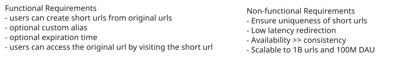
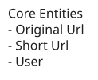
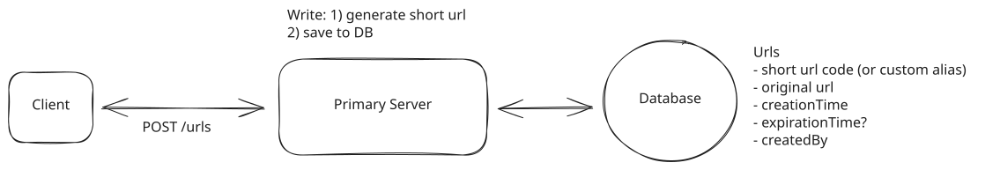
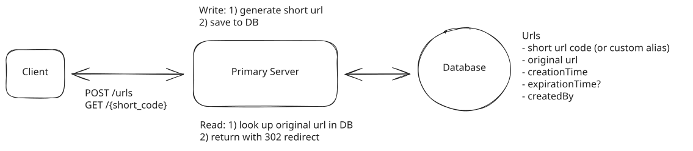
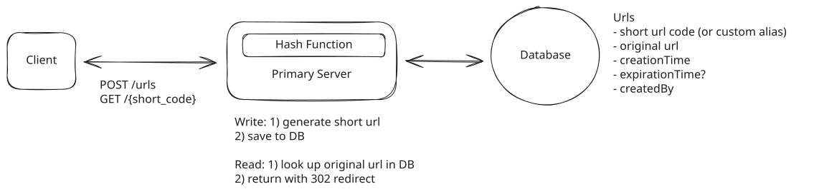
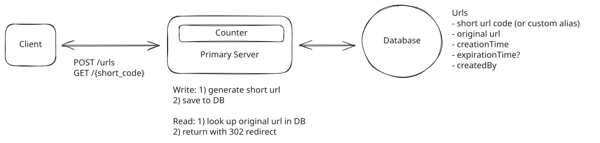
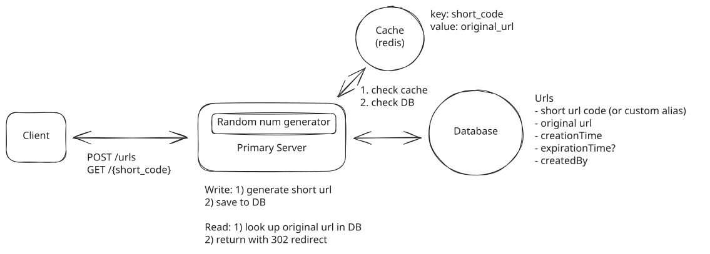
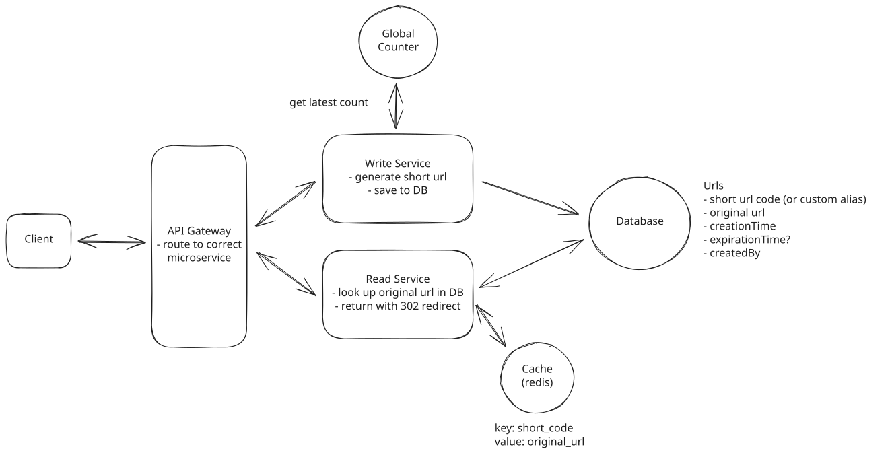

Common Problems
Bitly
Scaling Reads
Understanding the Problem
🔗 What is Bit.ly?
Bit.ly is a URL shortening service that converts long URLs into shorter, manageable links. It also provides analytics for the shortened URLs.
Designing a URL shortener is a very common beginner system design interview question. Whereas in many of the other breakdowns on Hello Interview we focus on depth, for this one, I'm going to target a more junior audience. If you're new to system design, this is a great question to start with! I'll try my best to slow down and teach concepts that are otherwise taken for granted in other breakdowns.
Functional Requirements
The first thing you'll want to do when starting a system design interview is to get a clear understanding of the requirements of the system. Functional requirements are the features that the system must have to satisfy the needs of the user.
In some interviews, the interviewer will provide you with the core functional requirements upfront. In other cases, you'll need to determine these requirements yourself. If you're familiar with the product, this task should be relatively straightforward. However, if you're not, it's advisable to ask your interviewer some clarifying questions to gain a better understanding of the system.
The most important thing is that you zero in on the top 3-4 features of the system and don't get distracted by the bells and whistles.
We'll concentrate on the following set of functional requirements:
Core Requirements
- Users should be able to submit a long URL and receive a shortened version.
- Optionally, users should be able to specify a custom alias for their shortened URL (ie. "www.short.ly/my-custom-alias")
- Optionally, users should be able to specify an expiration date for their shortened URL.
- Users should be able to access the original URL by using the shortened URL.
Below the line (out of scope):
- User authentication and account management.
- Analytics on link clicks (e.g., click counts, geographic data).
These features are considered "below the line" because they add complexity to the system without being core to the basic functionality of a URL shortener. In a real interview, you might discuss these with your interviewer to determine if they should be included in your design.

Non-Functional Requirements
Next up, you'll want to outline the core non-functional requirements of the system. Non-functional requirements refer to specifications about how a system operates, rather than what tasks it performs. These requirements are critical as they define system attributes like scalability, latency, security, and availability, and are often framed as specific benchmarks—such as a system's ability to handle 100 million daily active users or respond to queries within 200 milliseconds.
Core Requirements
- The system should ensure uniqueness for the short codes (each short code maps to exactly one long URL)
- The redirection should occur with minimal delay (< 100ms)
- The system should be reliable and available 99.99% of the time (availability > consistency)
- The system should scale to support 1B shortened URLs and 100M DAU
Below the line (out of scope):
- Data consistency in real-time analytics.
- Advanced security features like spam detection and malicious URL filtering.
An important consideration in this system is the significant imbalance between read and write operations. The read-to-write ratio is heavily skewed towards reads, as users frequently access shortened URLs, while the creation of new short URLs is comparatively rare. For instance, we might see 1000 clicks (reads) for every 1 new short URL created (write). This asymmetry will significantly impact our system design, particularly in areas such as caching strategies, database choice, and overall architecture.
Here is what you might write on the whiteboard:

Bit.ly Non-Functional Requirements
The Set Up
Defining the Core Entities
We recommend that you start with a broad overview of the primary entities. At this stage, it is not necessary to know every specific column or detail. We will focus on the intricacies, such as columns and fields, later when we have a clearer grasp. Initially, establishing these key entities will guide our thought process and lay a solid foundation as we progress towards defining the API.
Just make sure that you let your interviewer know your plan so you're on the same page. I'll often explain that I'm going to start with just a simple list, but as we get to the high-level design, I'll document the data model more thoroughly.
In a URL shortener, the core entities are very straightforward:
- Original URL: The original long URL that the user wants to shorten.
- Short URL: The shortened URL that the user receives and can share.
- User: Represents the user who created the shortened URL.
In the actual interview, this can be as simple as a short list like this. Just make sure you talk through the entities with your interviewer to ensure you are on the same page.

Bit.ly Entities
The API
The next step in the delivery framework is to define the APIs of the system. This sets up a contract between the client and the server, and it's the first point of reference for the high-level design.
Your goal is to simply go one-by-one through the core requirements and define the APIs that are necessary to satisfy them. Usually, these map 1:1 to the functional requirements, but there are times when multiple endpoints are needed to satisfy an individual functional requirement.
9/10 you'll use a REST API and focus on choosing the right HTTP method or verb to use.
- POST: Create a new resource
- GET: Read an existing resource
- PUT: Update an existing resource
- DELETE: Delete an existing resource
To shorten a URL, we'll need a POST endpoint that takes in the long URL and optionally a custom alias and expiration date, and returns the shortened URL. We use post here because we are creating a new entry in our database mapping the long url to the newly created short url.
// Shorten a URL
POST /urls
{
"long_url": "https://www.example.com/some/very/long/url",
"custom_alias": "optional_custom_alias",
"expiration_date": "optional_expiration_date"
}
->
{
"short_url": "http://short.ly/abc123"
}For redirection, we'll need a GET endpoint that takes in the short code and redirects the user to the original long URL. GET is the right verb here because we are reading the existing long url from our database based on the short code.
// Redirect to Original URL
GET /{short_code}
-> HTTP 302 Redirect to the original long URLWe'll talk more about which HTTP status codes to use during the high-level design.
High-Level Design
We'll start our design by going one-by-one through our functional requirements and designing a single system to satisfy them. Once we have this in place, we'll layer on depth via our deep dives.
1) Users should be able to submit a long URL and receive a shortened version
The first thing we need to consider when designing this system is how we're going to generate a short url. Users are going to come to us with long urls and expect us to shrink them down to a manageable size.
We'll outline the core components necessary to make this happen at a high-level.

Create a short url
- Client: Users interact with the system through a web or mobile application.
- Primary Server: The primary server receives requests from the client and handles all business logic like short url creation and validation.
- Database: Stores the mapping of short codes to long urls, as well as user-generated aliases and expiration dates.
When a user submits a long url, the client sends a POST request to /urls with the long url, custom alias, and expiration date. Then:
- The Primary Server receives the request and validates the long URL format using libraries like is-url or simple validation. Optionally, we can check if this exact long URL was already shortened and return the existing short code (deduplication). However, most URL shorteners allow multiple short codes for the same long URL since different users may want separate expiration dates, independent analytics, or different custom aliases. Deduplication trades off storage efficiency for these features.
- If the URL is valid, we generate a short code
- For now, we'll abstract this away as some magic function that takes in the long URL and returns a short URL. We'll dive deep into how to generate short URLs in the next section.
- If the user has specified a custom alias, we can use that as the short code (after validating that it doesn't already exist). To prevent custom aliases from colliding with future counter-generated codes, consider prefixing generated codes with a character that custom aliases can't use, or store them in separate namespaces.
- Once we have the short URL, we can proceed to insert it into our database, storing the short code (or custom alias), long URL, and expiration date.
- Finally, we can return the short URL to the client.
2) Users should be able to access the original URL by using the shortened URL
Now our short URL is live and users can access the original URL by using the shortened URL. Importantly, this shortened URL exists at a domain that we own! For example, if our site is located at short.ly, then our short urls look like short.ly/abc123 and all requests to that short url go to our Primary Server.

Redirect to original url
When a user accesses a shortened URL, the following process occurs:
- The user's browser sends a GET request to our server with the short code (e.g., GET /abc123).
- Our Primary Server receives this request and looks up the short code (abc123) in the database.
- If the short code is found and hasn't expired (by comparing the current date to the expiration date in the database), the server retrieves the corresponding long URL. For expired URLs, return a 410 Gone status.
- The server then sends an HTTP redirect response to the user's browser, instructing it to navigate to the original long URL.
For cleanup, we can run a background job periodically to delete expired rows from the database (or just keep them with their expiration date). More importantly, we should set the cache TTL to match or be shorter than URL expiration times so stale entries are automatically evicted.
There are two main types of HTTP redirects that we could use for this purpose:
- 301 (Permanent Redirect): This indicates that the resource has been permanently moved to the target URL. Browsers typically cache this response, meaning subsequent requests for the same short URL might go directly to the long URL, bypassing our server.
The response back to the client looks like this:
HTTP/1.1 301 Moved Permanently
Location: https://www.original-long-url.com- 302 (Found): This indicates that the resource is temporarily located at a different URL. Browsers do not cache this response, ensuring that future requests for the short URL will always go through our server first.
The response back to the client looks like this:
HTTP/1.1 302 Found
Location: https://www.original-long-url.comIn either case, the user's browser (the client) will automatically follow the redirect to the original long URL and users will never even know that a redirect happened.
For a URL shortener, a 302 redirect is often preferred because:
- It gives us more control over the redirection process, allowing us to update or expire links as needed.
- It prevents browsers from caching the redirect, which could cause issues if we need to change or delete the short URL in the future.
- It allows us to track click statistics for each short URL (even though this is out of scope for this design).
Potential Deep Dives
At this point, we have a basic, functioning system that satisfies the functional requirements. However, there are a number of areas we could dive deeper into to reduce the likelihood of collision, support scalability, and improve performance. We can now look back at our non-functional requirements and see which ones still need to be satisfied or improved upon.
1) How can we ensure short urls are unique?
In our high-level design, we abstracted away the details of how we generate a short url but now it's time to get into the nitty-gritty! There are a handful of constraints we need to keep in mind as we design:
- We need to ensure that the short codes are unique.
- We want the short codes to be as short as possible (it is a url shortener afterall).
- We want to ensure codes are efficiently generated.
Let's weigh a few options and consider their pros and cons.
Approach
The silliest thing we could do to shorten an input url is to just take the prefix of the input url as the short code. Imagine you had a url like www.linkedin.com/in/evan-king-40072280/ we could just take the first N (lets say 8 for now) characters of the url and use that as the short code. In this case www.short.ly/www.link.
Challenges
Clearly, this method would not meet constraint #1 about uniqueness. Any two urls that share the first N characters would end up mapping to the exact same short url. When a user comes and asks to be redirected via short url www.short.ly/www.link we would not know whether they want to visit www.linkedin.com/in/evan-king-40072280/, www.linkedin.com/in/stefanmai/, or any of the countless other urls that share the same prefix.
Approach
We need some entropy (randomness) to try to ensure that our codes are unique. We could try a random number generator or a hash function!
Using a random number generator to create short codes involves generating a random number each time a new URL is shortened. This random number serves as the unique identifier for the URL. We can use common random number generation functions like JavaScript's Math.random() or more robust cryptographic random number generators for increased unpredictability. The generated random number would then be used as the short code for the URL. But a random number generator does not provide enough entropy to ensure that our codes are unique.
So instead, we could use a hash function like SHA-256 to generate a fixed-size hash code. Hash functions take an input and return a deterministic, fixed-size string of characters. Pure hash functions are deterministic: the same long URL always maps to the same short code without needing to query the database. This may be desirable (deduplication) or not (if you need multiple codes per URL or want to prevent guessability/adversarial preimages). For the latter cases, add a secret salt or nonce (HMAC). Hash functions also provide a high degree of entropy, meaning that the output appears random and is unlikely to collide for different inputs.
We can then take the output and encode it using a base62 encoding scheme and take just the first N characters as our short code. N is determined based on the number of characters needed to minimize collisions (e.g., 8 characters gives 62^8 ≈ 218 trillion possible codes).
Why base62? It's a compact representation of numbers that uses 62 characters (a-z, A-Z, 0-9). The reason it's 62 and not the more common base64 is because we exclude + and / - the slash is a path separator in URLs and the plus sign can be interpreted as a space in query strings.
Let's view a quick example of this in some pseudo code.
input_url = "https://www.example.com/some/very/long/url"
# Canonicalize URL first (lowercase host, strip default ports, normalize trailing slash, etc.)
canonical_url = canonicalize(input_url)
hash_code = hash_function(canonical_url)
short_code_encoded = base62_encode(hash_code)
short_code = short_code_encoded[:8] # 8 characters
Hash Function
Challenges
Despite the randomness, there's still a chance of generating duplicate short codes as the number of stored URLs increases. With a code space of size |S| and n codes already in use, the probability the next randomly generated code collides is n / |S|. At large scale this can become non-negligible, requiring retries and database checks to enforce uniqueness.
To reduce collision probability, we need higher entropy, which means generating longer short codes. However, longer codes negate the benefit of having a short URL. Detecting and resolving collisions also adds database lookups on insertion, introducing latency and complexity. This creates a tradeoff between uniqueness, shortness, and efficiency—making it difficult to optimize all three simultaneously.
To handle collisions, implement a UNIQUE constraint on the short code column and retry with bounded attempts (e.g., max 3-5 retries) before falling back to a different strategy or returning an error. Upon saving to the database, we'll get an error if the short code already exists. In this case, we can simply retry the process with a random salt added to the hash function.
Approach
One way to guarantee we don't have collisions is to simply increment a counter for each new url. We can then take the output of the counter and encode it using base62 encoding to ensure it's a compacted representation.
Redis is particularly well-suited for managing this counter because it's single-threaded and supports atomic operations. Being single-threaded means Redis processes one command at a time, eliminating race conditions. Its INCR command atomically increments the counter and returns the new value in a single operation. Because Redis is single-threaded, two simultaneous calls will always receive different values. If one gets 1000, the other gets 1001. This guarantee is what makes Redis ideal for distributed counter management.
Each counter value is unique, eliminating the risk of collisions without the need for additional checks. Incrementing a counter and encoding it is computationally efficient, supporting high throughput. With proper counter management, the system can scale horizontally to handle massive numbers of URLs. The short code can be easily decoded back to the original ID if needed, aiding in database lookups.

Unique Counter with Base62 Encoding
Challenges
In a distributed environment, maintaining a single global counter can be challenging due to synchronization issues. All instances of our Primary Server would need to agree on the counter value. We'll talk more about this when we get into scaling.
Sequential counters also produce predictable short codes, making URL enumeration possible. An attacker could iterate through codes to discover all URLs. If this is a concern, apply a reversible transformation (like XOR with a secret key) before base62 encoding, or accept the tradeoff since short URLs are often meant to be shared publicly anyway.
We also have to consider that the size of the short code continues to increase over time with this method.
To determine whether we should be concerned about length, we can do a little math. If we have 1B urls, when base62 encoded, this would result in a 6-character string. Here's why:
This means that even with a billion URLs, our short codes would still be quite compact. At 62^6 (approximately 56 billion URLs), we'd need to move to 7-character codes, giving us capacity for 62^7 (over 3.5 trillion) URLs. This scalability allows us to handle a massive number of URLs while keeping the codes short.
2) How can we ensure that redirects are fast?
When dealing with a large database of shortened URLs, finding the right match quickly becomes crucial for a smooth user experience. Without any optimization, our system would need to check every single pair of short and original URLs in the database to find the one we're looking for. This process, known as a "full table scan," can be incredibly slow, especially as the number of URLs grows into the millions or billions.
Pattern: Scaling Reads
URL shorteners showcase the extreme read-to-write ratio that makes scaling reads critical. With potentially millions of clicks per shortened URL, aggressive caching strategies become essential.
Approach
To avoid a full table scan, we can use a technique called indexing. Think of an index like a book's table of contents or a library's card catalog. It provides a quick way to find what we're looking for without having to flip through every page or check every shelf. In database terms, an index creates a separate, sorted list of our short URLs, each with a pointer to where the full information is stored in the main table. This allows the database to use efficient search methods, dramatically reducing the time it takes to find a matching URL.
-
B-tree Indexing: Most relational databases use B-tree indexes by default. For our URL shortener, we'd create a B-tree index on the short code column. This provides O(log n) lookup time, which is very efficient for large datasets.
-
Primary Key: We should designate the short code as the primary key of our table. This automatically creates an index and ensures uniqueness. By making the short code the primary key, we get the benefits of both indexing and data integrity, as the database will enforce uniqueness and optimize queries on this field.
With these optimizations in place, our system can now find the matching original URL in a fraction of the time it would take without them. Instead of potentially searching through millions of rows, the database can find the exact match almost instantly, greatly improving the performance of our URL shortener service.
Challenges
Relying solely on a disk-based database for redirects presents some challenges, although modern SSDs have significantly reduced the performance gap. While disk I/O is slower than memory access, it's not prohibitively slow. A typical SSD can handle around 100,000 IOPS (Input/Output Operations Per Second), which is quite fast for many applications.
However, the main challenge lies in the sheer volume of read operations required. With 100M DAU (Daily Active Users), assuming each user performs an average of 5 redirects per day, we're looking at:
100,000,000 users * 5 redirects = 500,000,000 redirects per day
500,000,000 / 86,400 seconds ≈ 5,787 redirects per second
This assumes redirects are evenly distributed throughout the day, which is unlikely. Most redirects will occur during peak hours, which means we need to design for high-traffic spikes. Multiplying by 100x to handle the spikes means we need to handle ~600k read operations per second.
Even with optimized queries and indexing, a single database instance may struggle to keep up with this volume of traffic. This high read load could lead to increased response times, potential timeouts, and might affect other database operations like URL shortening.
Approach
To improve redirect speed, we can introduce an in-memory cache like Redis or Memcached between the application server and the database. This cache stores the frequently accessed mappings of short codes to long URLs. When a redirect request comes in, the server first checks the cache. If the short code is found in the cache (a cache hit), the server retrieves the long URL from the cache, significantly reducing latency. If not found (a cache miss), the server queries the database, retrieves the long URL, and then stores it in the cache for future requests.
The key here is that instead of going to disk we access the mapping directly from memory. This difference in access speed is significant:
- Memory access time: ~100 nanoseconds (0.0001 ms)
- SSD access time: ~0.1 milliseconds
- HDD access time: ~10 milliseconds
This means memory access is about 1,000 times faster than SSD and 100,000 times faster than HDD. In terms of operations per second:
- Memory: Can support millions of reads per second
- SSD: ~100,000 IOPS (Input/Output Operations Per Second)
- HDD: ~100-200 IOPS

In-Memory Cache
Challenges
While implementing an in-memory cache offers significant performance improvements, it does come with its own set of challenges. Cache invalidation can be complex, especially when updates or deletions occur, though this issue is minimized since URLs are mostly read-heavy and rarely change. The cache needs time to "warm up," meaning initial requests may still hit the database until the cache is populated. Memory limitations require careful decisions about cache size, eviction policies (e.g., LRU - Least Recently Used), and which entries to store. Introducing a cache adds complexity to the system architecture, and you'll want to be sure you discuss the tradeoffs and invalidation strategies with your interviewer.
Approach
Another thing we can do to reduce latency is to utilize Content Delivery Networks (CDNs) and edge computing. In this approach, the short URL domain is served through a CDN with Points of Presence (PoPs) geographically distributed around the world. The CDN nodes cache the mappings of short codes to long URLs, allowing redirect requests to be handled close to the user's location. Furthermore, by deploying the redirect logic to the edge using platforms like Cloudflare Workers or AWS Lambda@Edge, the redirection can happen directly at the CDN level without reaching the origin server.
The benefit here is that, at least for popular short codes, the redirection can happen at the CDN (close to the user) and it never even reaches our Primary Server, meaningfully reducing the latency.
Challenges
However, this too presents some challenges. Ensuring cache invalidation and consistency across all CDN nodes can be complex. Setting up edge computing requires additional configuration and understanding of serverless functions at the edge. Cost considerations come into play, as CDNs and edge computing services may incur higher costs, especially with high traffic volumes. Edge functions may have limitations in execution time, memory, and available libraries, requiring careful optimization of the redirect logic. Lastly, debugging and monitoring in a distributed edge environment can be more challenging compared to centralized servers.
You're trading cost and complexity for performance here. Whether or not this is worth it depends on factors like company price sensitivity, user experience requirements, and traffic patterns.
3) How can we scale to support 1B shortened urls and 100M DAU?
We've done much of the hard work to scale already! We introduced a caching layer which will help with read scalability, now lets talk a bit about scaling writes.
We'll start by looking at the size of our database.
Each row in our database consists of a short code (~8 bytes), long URL (~100 bytes), creationTime (~8 bytes), optional custom alias (~100 bytes), and expiration date (~8 bytes). This totals to ~200 bytes per row. We can round up to 500 bytes to account for any additional metadata like the creator id, analytics id, etc.
If we store 1B mappings, we're looking at 500 bytes * 1B rows = 500GB of data. The reality is, this is well within the capabilities of modern SSDs. Given the number of urls on the internet is our maximum bound, we can expect it to grow but only modestly. If we were to hit a hardware limit, we could always shard our data across multiple servers but a single Postgres instance, for example, should do for now.
So what database technology should we use?
The truth is: most will work here. We offloaded the heavy read throughput to a cache and write throughput is pretty low. We could estimate that maybe 100k new urls are created per day. 100k new rows per day is ~1 row per second. So any reasonable database technology should do (ie. Postgres, MySQL, DynamoDB, etc). In your interview, you can just pick whichever you have the most experience with! If you don't have any hands on experience, go with Postgres.
But what if the DB goes down?
It's a valid question, and one always worth considering in your interview. We could use a few different strategies to ensure high availability.
-
Database Replication: By using a database like Postgres that supports replication, we can create multiple identical copies of our database on different servers. If one server goes down, we can redirect to another. This adds complexity to our system design as we now need to ensure that our Primary Server can interact with any replica without any issues. This can be tricky to get right and adds operational overhead.
-
Database Backup: We could also implement a backup system that periodically takes a snapshot of our database and stores it in a separate location. This adds complexity to our system design as we now need to ensure that our Primary Server can interact with the backup without any issues. This can be tricky to get right and adds operational overhead.
Now, let's point our attention to the Primary Server.
Coming back to our initial observation that reads are much more frequent than writes, we can scale our Primary Server by separating the read and write operations. This introduces a microservice architecture where the Read Service handles redirects while the Write service handles the creation of new short urls. This separation allows us to scale each service independently based on their specific demands.
Now, we can horizontally scale both the Read Service and the Write Service to handle increased load. Horizontal scaling is the process of adding more instances of a service to distribute the load across multiple servers. This can help us handle a large number of requests per second without increasing the load on a single server. When a new request comes in, it is randomly routed to one of the instances of the service.
But what about our counter?
Horizontally scaling our write service introduces a significant issue! For our short code generation to remain globally unique, we need a single source of truth for the counter. This counter needs to be accessible to all instances of the Write Service so that they can all agree on the next value.
We could solve this by using a centralized Redis instance to store the counter. This Redis instance can be used to store the counter and any other metadata that needs to be shared across all instances of the Write Service. Redis is single-threaded and is very fast for this use case. It also supports atomic increment operations which allows us to increment the counter without any issues. Now, when a user requests to shorten a url, the Write Service will get the next counter value from the Redis instance, compute the short code, and store the mapping in the database.

Final Design
But should we be concerned about the overhead of an additional network request for each new write request?
The reality is, this is probably not a big deal. Network requests are fast! In practice, the overhead of an additional network request is negligible compared to the time it takes to perform other operations in the system. That said, we could always use a technique called "counter batching" to reduce the number of network requests. Here's how it works:
- Each Write Service instance requests a batch of counter values from the Redis instance (e.g., 1000 values at a time).
- The Redis instance atomically increments the counter by 1000 and returns the start of the batch.
- The Write Service instance can then use these 1000 values locally without needing to contact Redis for each new URL.
- When the batch is exhausted, the Write Service requests a new batch.
This approach reduces the load on Redis while still maintaining uniqueness across all instances. It also improves performance by reducing network calls for counter values.
To ensure high availability of our counter service, we can use Redis Sentinel or Redis Cluster with automatic failover. A single Redis instance can handle 100k+ operations per second, far exceeding typical URL shortening rates, especially with counter batching.
For multi-region deployment, allocate disjoint counter ranges to each region (e.g., region A gets 0-1B, region B gets 1B-2B) to avoid cross-region coordination. Writes go to the local region's Redis, while reads can be served globally via distributed caches.
If Redis fails before replicating the latest counter, you might lose a few values, but since we only need uniqueness (not continuity), this is acceptable. The database's UNIQUE constraint on short_code provides the ultimate safety net.
What is Expected at Each Level?
URL shortener is considered an entry-level system design question, but that doesn't mean it's trivial. Here's what I look for at each level.
Mid-level
At mid-level, I expect you to produce a working high-level design that handles URL shortening and redirection. You should understand the basic flow: user submits a long URL, system generates a short code, stores the mapping, and redirects users who visit the short URL. I want to see you recognize that short code generation needs to guarantee uniqueness and propose at least one reasonable approach (hashing or counter-based). You should understand why we use a 302 redirect (even if you did not know the status code yourself) and be able to discuss basic database indexing. With some prompting, you should recognize that a cache would help with read performance given the read-heavy nature of the system.
Senior
For senior candidates, I expect you to drive the conversation and proactively identify the key challenges: unique code generation at scale, fast redirects, and horizontal scaling. You should be able to articulate the tradeoffs between hashing (collision handling) and counter-based approaches (coordination overhead) without much prompting. I expect you to discuss caching strategies in detail, including cache invalidation for expired URLs. You should propose a reasonable database choice and justify it. When we get to scaling, you should recognize that separating read and write services makes sense given the asymmetric workload, and understand how to scale the counter across multiple write instances using Redis or similar coordination.
Staff+
For staff candidates, I'm evaluating your ability to see past the "textbook" solution and discuss real production concerns. You should quickly recognize this is a read-heavy system and structure your design accordingly from the start. I expect you to proactively discuss multi-region deployment, counter range allocation, and what happens during Redis failover without being prompted (if you took the counter batching approach). You should understand the security implications of predictable short codes and propose mitigations if relevant. Staff candidates also demonstrate product thinking by discussing custom alias collision prevention, URL expiration cleanup strategies, and how the system would evolve as requirements change. Rather than just solving the problem, you show you've thought about operating and maintaining the system at scale.
Test Your Knowledge
Answer the question below to find your gaps.
Question 1 of 15
Which is NOT a benefit of caching?
1
Improved response time
2
Reduced database load
3
Lower network latency for repeated requests
4
Increased data consistency